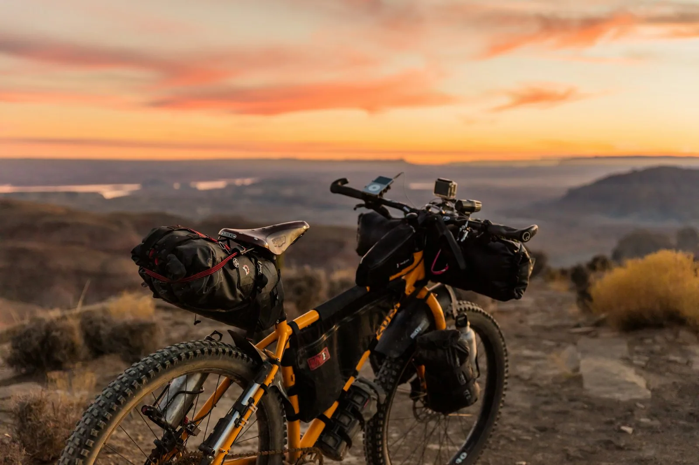
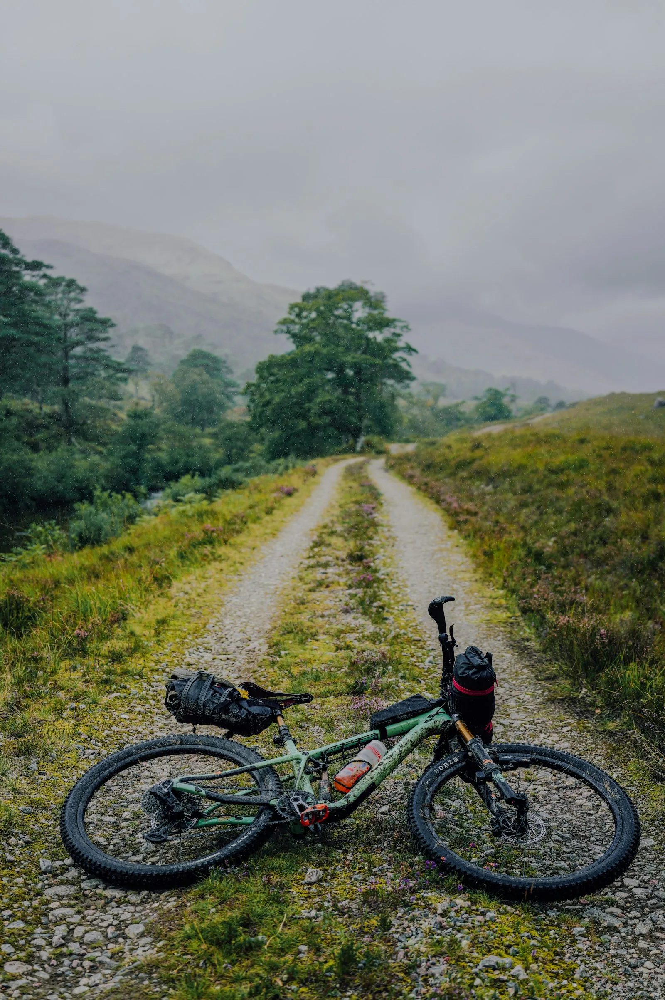

Статьи / Подготовка / Снаряжение
Как собрать багаж на два дня и не перегрузить заднее колесо
В первую поездку я сложил всё в задние сумки и на сороковом километре сломал две спицы. Разбираю, как распределить вес на велосипеде и мотоцикле, чтобы ехать два дня без сюрпризов.

Взвешивайте всё, даже мелочьЗадача
Увезти палатку, спальник, еду и воду на два дня так, чтобы колёса и рама не страдали, а велосипед оставался управляемым на грунте. Без багажника за 20 тысяч и без новых сумок, если можно обойтись старыми.
Решение: разнести вес по велосипеду
Главное правило простое: тяжёлое ближе к центру и ниже, лёгкое на руль и в рюкзак. Задняя ось больше не держит всё в одиночку, и велосипед перестаёт вилять на грунте.
Всего ≈12,0 кг вместо 14 кг на одном багажнике
Как собрать за вечер
- 1Разложите всё на полуКаждую вещь по отдельности. Сразу станет видно, что лишнее: второй свитер, третья пара носков, большая кружка.
- 2Взвесьте кучкиБытовой безмен за 300 ₽ решает больше, чем любая таблица в интернете. Записывайте вес на скотче прямо на сумке.
- 3Тяжёлое к центруВоду и еду ближе к раме, палатку под седло, на руль только то, что объёмное и лёгкое.
- 4Проедьте 10 км до выездаС полной загрузкой, по грунту и с одним подъёмом. Всё, что гремит или трётся, переложите дома, а не на обочине.

Три литра воды весят как палатка и спальник вместе. Их везут на вилке или в раме, но не за спиной.
А если мотоцикл
Принцип тот же, только веса больше. Тяжёлое в кофры, ниже и ближе к центру. Кофры загружайте одинаково, разница больше килограмма чувствуется в поворотах. В сумку на бак только лёгкое: документы, телефон, перчатки.
Давление в задней шине поднимите до значения для полной загрузки. Оно написано в инструкции или на наклейке на маятнике.
Что не сработало
Сумки на вилку ставятся только на крепления, которые есть на раме. На карбоновой вилке без проушин так делать нельзя.
Рюкзак всё равно утомляет спину после шестидесяти километров. В следующий раз хочу обойтись без него совсем.
Результат в дороге
Со второго раза доехали без поломок. На грунте велосипед стал легче в руле, а на подъёмах перестал задирать переднее колесо. Проверено на маршруте вдоль Волги, 95 км за два дня.